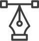

About us
When you work with us, you are part of a team of committed collaborators. All aspects of our software development process are integrated, iterative and agile.
Our approach unifies design, development and
product management to create exceptional products.
We start each project by understanding your business goals,
the user’s needs and the product requirements.
Then we help translate them into effective and elegant solutions.
Services
Before we sign a contract or write a line of code our team will spend the necessary time needed to
understand your product vision.
The outcome of this scoping session is a proposal or high-level statement of work.
Based on your requirements, we can provide a complete offering or just the pieces you need.
What we do
Design
Our design practice offers a full range of services including
branding strategy, interaction and visual design and user experience testing.
Throughout your project, our designers create and implement visual designs and workflows,
solicit user feedback, and work with you to make sure what gets built is what is needed.

Development
All engineers are fluent in the latest enterprise, mobile and web development technologies. They collaborate with your team to write, test, and improve code on a daily basis, using proven practices such as test-driven development and pair programing.
Product management
Planning and development is iterative. Because we are constantly coding and testing, the products we build are always ready to go live. This iterative process allows for changes as business requirements evolve.